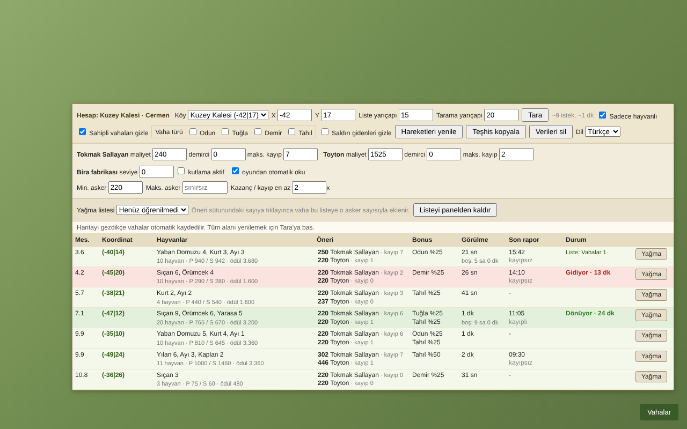
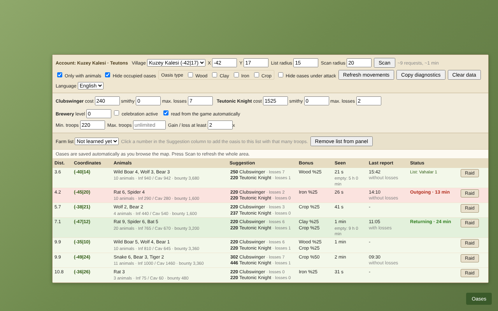

Vahaları tek listede gör, yağmayı hesapla.
See every oasis in one list and plan your raids.
Vaha Asistanı, Travian Legends için bir Chrome uzantısıdır. Köyünün çevresindeki vahaları hayvanları, ödülleri ve bonuslarıyla yakından uzağa sıralar, her vaha için kaç askerle yağmaya gitmen gerektiğini hesaplar.
Vaha Asistanı is a Chrome extension for Travian Legends. It lists the oases around your village from nearest to farthest with their animals, bounty and bonus, and calculates how many troops you need to raid each one.


Özellikler
Features
Vaha tarama
Oasis scan
Seçtiğin yarıçaptaki vahaları tarar. Hayvanları, piyade ve süvari savunmasını, bonusu ve son rapor zamanını tek tabloda gösterir.
Scans oases within the radius you choose. Shows animals, infantry and cavalry defense, bonus and the time of the last report in one table.
Asker önerisi
Troop suggestions
Yağma formülüne göre, kayıp sınırına ve kazanç/kayıp oranına uyan asker sayısını önerir. Roma, Cermen, Galya, Mısır ve Hun desteklenir.
Suggests the troop amount that fits your loss limit and gain/loss ratio, based on the raid formula. Supports Romans, Teutons, Gauls, Egyptians and Huns.
Ödül hesabı
Bounty calculation
Hayvanlar öldüğünde kazanacağın hammaddeyi hesaplar ve kayıplarının maliyetiyle karşılaştırır.
Calculates the resources you earn when the animals are killed and compares it with the cost of your losses.
Demirci ve bira fabrikası
Smithy and brewery
Aktif köyün demirci seviyelerini ve Cermenlerde bira fabrikası bonusunu oyundan okuyup hesaba katar.
Reads the smithy levels of the active village and, for Teutons, the brewery bonus from the game and includes them in the calculation.
Hareket takibi
Movement tracking
Giden ve dönen yağmaları vahaların yanında gösterir. Aynı vahaya yanlışlıkla ikinci kez asker göndermezsin.
Shows outgoing and returning raids next to each oasis, so you do not send troops to the same oasis twice by mistake.
Yağma listesine ekleme
Add to farm list
Önerilen asker sayısına tıklayınca vaha, seçtiğin yağma listesine o sayıyla eklenir. Her tıklama tek bir işlem yapar.
Click a suggested troop amount to add the oasis to your selected farm list with that amount. Each click performs a single action.
Fiyatlar
Pricing
Aylık
Monthly
Her ay yenilenir. İstediğin zaman iptal edebilirsin.
Renews every month. Cancel anytime.
Satın alBuyYıllık
Yearly
Her yıl yenilenir. Aylık plana göre çok daha uygun.
Renews every year. Much cheaper than the monthly plan.
Satın alBuyÖmür boyu
Lifetime
Bir kez öde, süresiz kullan. Gelecek güncellemeler dahil.
Pay once, use without time limit. Future updates included.
Satın alBuyHer lisans 2 tarayıcıda kullanılabilir. Ödemeler, satıcı sıfatıyla vergi ve faturalandırmayı yürüten Lemon Squeezy üzerinden alınır. Fiyatlara ülkene göre KDV eklenebilir.
Each license can be used in 2 browsers. Payments are processed by Lemon Squeezy, which acts as the merchant of record and handles taxes and invoicing. VAT may be added depending on your country.
Nasıl çalışır
How it works
- Planını seç ve satın al. Lisans anahtarın e-postana gelir.
- Vaha Asistanı'nı Chrome Web Store'dan yükle.
- Oyunu aç, sağ alttaki Vahalar butonuna bas ve lisans anahtarını gir.
- Tara ile çevrendeki vahaları listele ve önerileri kullan.
- Choose your plan and buy it. Your license key is sent to your email.
- Install Vaha Asistanı from the Chrome Web Store.
- Open the game, press the Oases button at the bottom right and enter your license key.
- Press Scan to list the oases around you and use the suggestions.
Sıkça sorulan sorular
Frequently asked questions
Hangi tarayıcılarda çalışır?
Google Chrome ve Chrome uzantılarını destekleyen tarayıcılarda (örneğin Edge, Brave) çalışır.
Which browsers are supported?
Google Chrome and browsers that support Chrome extensions (for example Edge and Brave).
Lisansımı başka bir bilgisayara taşıyabilir miyim?
Evet. Paneldeki Lisans butonundan lisansı mevcut tarayıcıdan kaldırıp yeni bilgisayarda aynı anahtarı girebilirsin. Bir anahtar aynı anda 2 tarayıcıda kullanılabilir.
Can I move my license to another computer?
Yes. Use the License button in the panel to remove the license from the current browser, then enter the same key on the new computer. A key can be used in 2 browsers at the same time.
Aboneliğimi nasıl iptal ederim?
Satın alma e-postasındaki bağlantıdan ya da vahaasistani@gmail.com adresine yazarak iptal edebilirsin. Ödediğin dönemin sonuna kadar kullanmaya devam edersin.
How do I cancel my subscription?
Use the link in your purchase email or write to vahaasistani@gmail.com. You can keep using it until the end of the period you paid for.
Verilerim nerede saklanıyor?
Oyun verileri ve ayarların sadece kendi tarayıcında saklanır. Lisansını doğrulamak için yalnızca lisans anahtarın Lemon Squeezy'ye gönderilir. Ayrıntılar için gizlilik politikasına bak.
Where is my data stored?
Game data and your settings are stored only in your own browser. Only your license key is sent to Lemon Squeezy to verify your license. See the privacy policy for details.